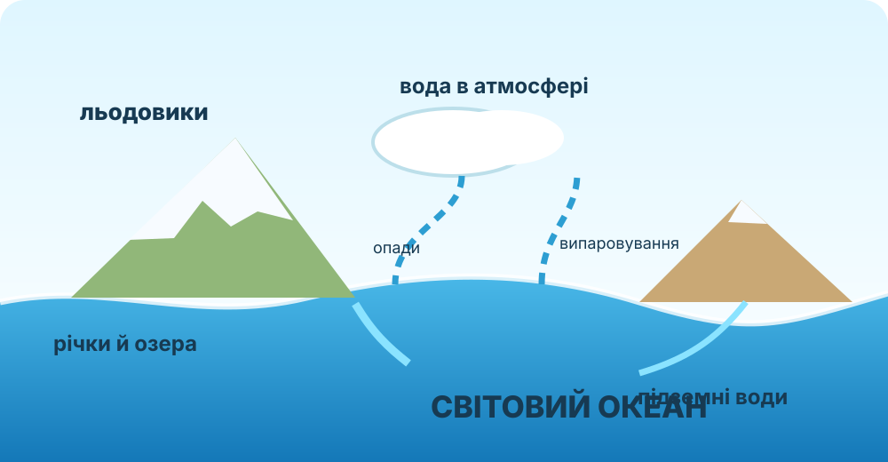
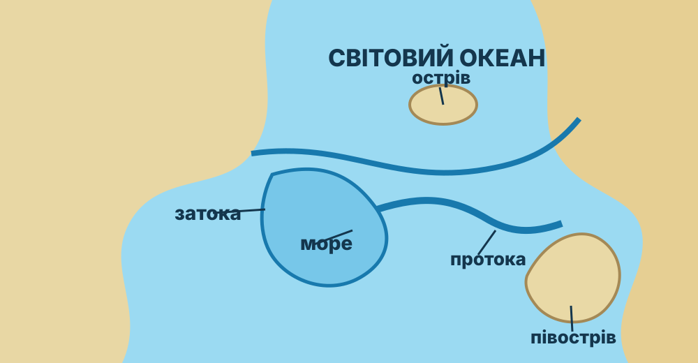

об’єкт на реальній карті, а не за пам’яттю.
ПАСПОРТ ПРАКТИЧНОЇ РОБОТИЗнайдіть Позначте Перевірте
Що має бути результатом?
Продукт: правильно підписана карта + таблиця класифікації + аргументований висновок.
його на інтерактивній карті кліком.
відстань між вашим кліком і реальною позицією.
Важливо: для великих об’єктів на кшталт океану координата є умовною центральною точкою. Для проток, островів і півостровів точність перевірки суворіша.
Гідросфера — це не лише океан

Роздивіться схему й випишіть щонайменше чотири резервуари води. Не переходьте до визначення нижче, доки не зробите спостереження.
Числова підказка від NASA
Близько 71% поверхні Землі вкрито водою, а океани містять приблизно 96,5% усієї води планети.
Отже, Світовий океан домінує у запасах води, але гідросфера охоплює також льодовики, підземні води, річки, озера та воду атмосфери.
Нанесіть об’єкти на карту
Оберіть назву. Потім клацніть на карті там, де, на Вашу думку, розташований об’єкт. Система виміряє похибку.
Оберіть об’єкт і поставте першу позначку.
Влучність
—
Успішно позначено
0
Середня похибка
—
Перевірте, що в роботі є всі об’єкти з КТП
| Група | Об’єкти | Виконано |
|---|---|---|
| Океани | Тихий, Атлантичний, Індійський, Північний Льодовитий, Південний | |
| Моря | Чорне, Азовське, Середземне | |
| Протоки | Керченська, Гібралтарська, Магелланова, Берингова | |
| Затоки | Біскайська, Бенгальська | |
| Острови | Велика Британія, Гренландія, Мадагаскар, Джарилгач | |
| Півострови | Скандинавський, Кримський, Аравійський, Індостан |
Не плутайте море, затоку й протоку

Натисніть поняття, а потім сформулюйте власний критерій відмінності.
Оберіть поняття.
Чи достатньо фотографії, щоб визначити географічний тип?


Доказове завдання
Учень каже: «Якщо ділянка води з трьох боків оточена суходолом, це завжди море». Спростуйте твердження, використавши поняття затока, море і хоча б один реальний приклад із карти.
Світовий океан як єдина система
NOAA Ocean Today. Після перегляду назвіть один факт, який підтверджує, що океан — глобальна система, а не набір ізольованих водойм.
Тепер формулюємо правила
Гідросфера
Водна оболонка Землі: Світовий океан, води суходолу, льодовики, підземні води та вода атмосфери.
Світовий океан
Безперервний водний простір Землі, умовно поділений на океани та їхні частини.
Море / затока
Обидва є частинами океану або моря, але відрізняються положенням, ступенем відокремленості та формою берегів.
Протока
Вузький водний простір між ділянками суходолу, що сполучає інші водні простори.
Чому назву географічного об’єкта не можна визначати лише за його формою?
§36 + завершення картографічної роботи
- Опрацюйте §36.
- Завершіть підписи всіх об’єктів із реєстру.
- Для трьох об’єктів запишіть по одному картографічному доказу їх типу.
- Додатково: знайдіть на карті ще одну протоку і одну затоку, яких немає у переліку КТП.